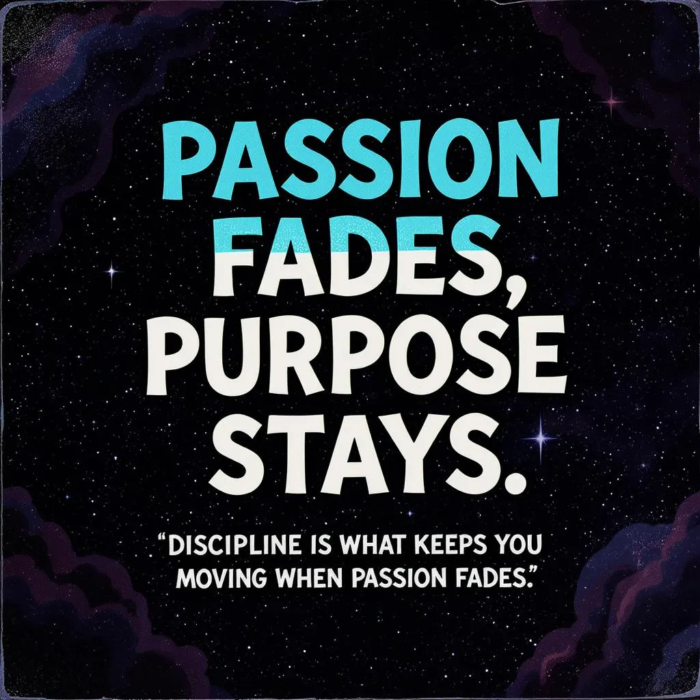
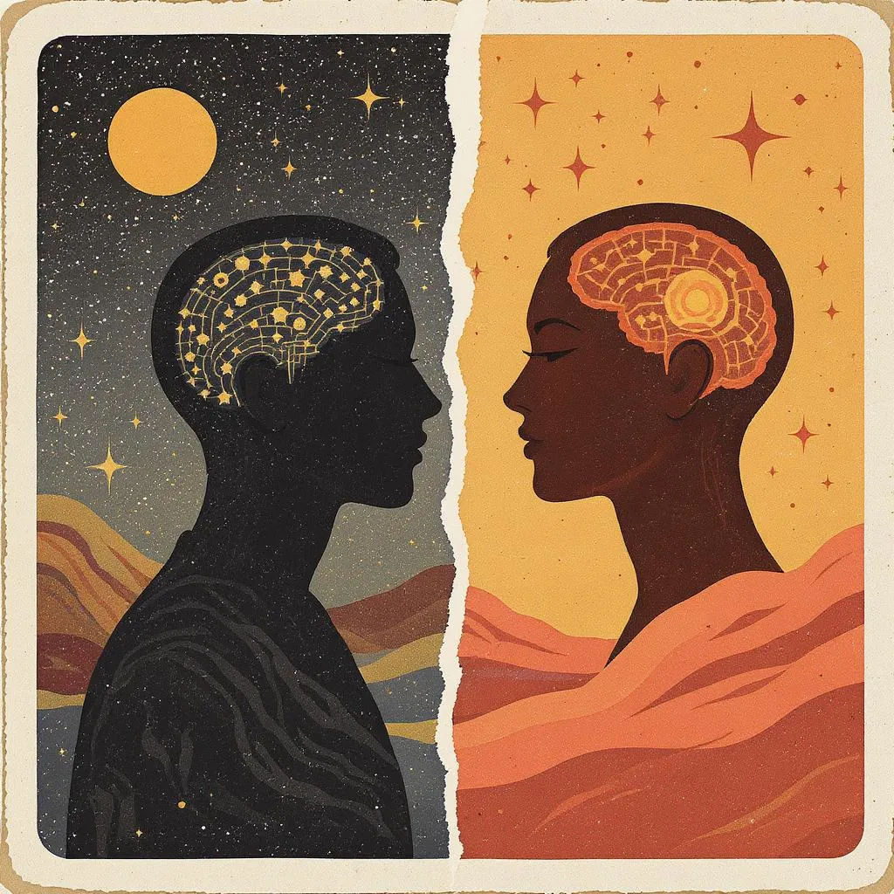
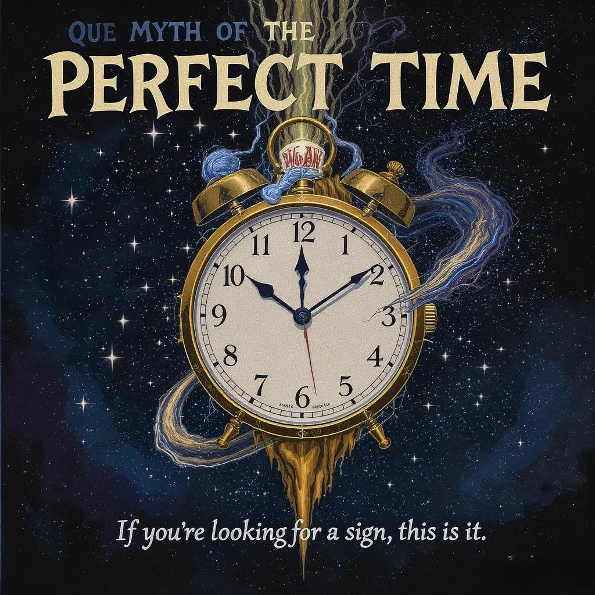

hi, i'm Alex.
found 5 posts tagged with motivation

Passion Fades, Purpose Stays
Passion is great; but consistency is more important than staying excited
2025-06-27

Perspective Changes Everything
In a world increasingly thriving on comparison, slow down and appreciate what you already have
2025-06-24
The Gift of Hindsight
Growth often hides in the moments we wish we could rewrite. But maybe we were never off course
2025-06-23
